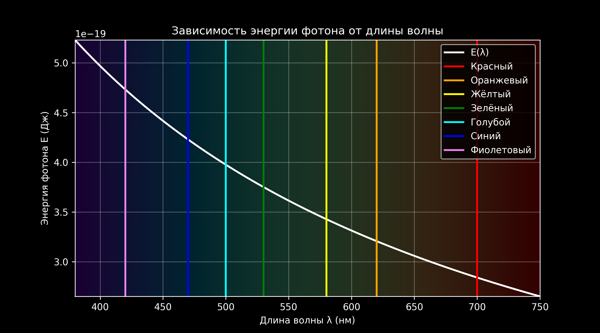
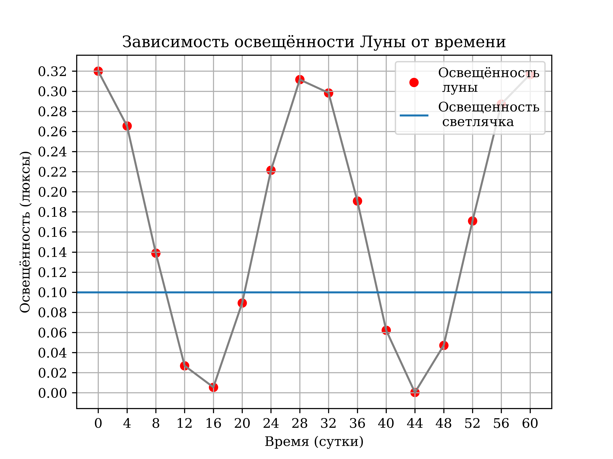
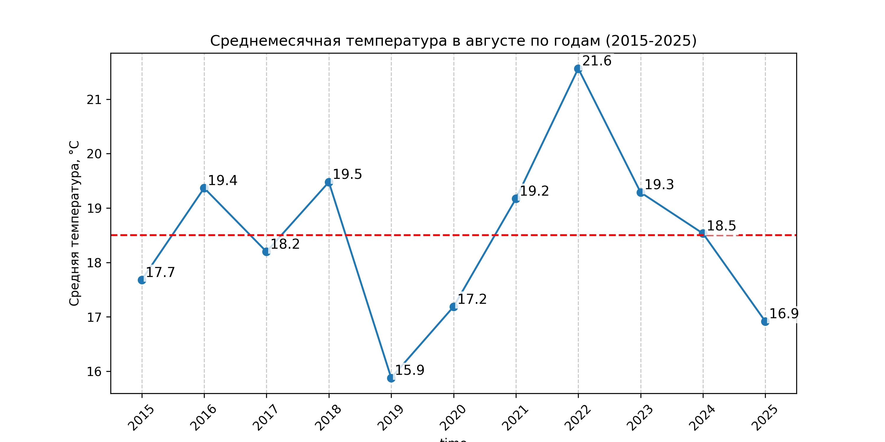

Основная цель — сформировать представления о типах зависимости в парных числовых выборках, научиться различать разные типы зависимости, познакомиться с понятием случайной изменчивости.
В ходе работы рассматриваются три принципиально разных типа зависимости между числовыми величинами.
Значения одной величины монотонно возрастают или убывают при изменении другой. По нескольким точкам можно точно восстановить вид функции.
Значения одной величины регулярно повторяются через равные промежутки другой. Характерная черта — симметрия пиков относительно среднего уровня.
Значения варьируются вокруг некоторого среднего уровня без явного тренда или периода. Описываются статистическими характеристиками — средним и отклонениями от него.
Умение распознавать тип зависимости является ключевым навыком при анализе данных: от этого зависит выбор метода обработки и интерпретации результатов.
Зависимость энергии \(E\) фотона от длины световой волны \(\lambda\) — обратная пропорциональность:
где \(A\) — константа пропорциональности.

| \(\lambda_i\), нм | \(E_i\), эВ | \(A_i = E_i \cdot \lambda_i\) |
|---|---|---|
| Среднее \(A =\) | ||

| № | \(x_i\) (время) | \(y_i\) (освещённость) |
|---|---|---|
| 1 | ||
| 2 | ||
| 3 | ||
| 4 | ||
| 5 | ||
| 6 | ||
| 7 | ||
| 8 | ||
| Среднее \(\bar{y}\) | ||
| \(\Delta_{\text{high}} = y_{\max} - \bar{y}\) | ||
| \(\Delta_{\text{low}} = \bar{y} - y_{\min}\) | ||

| Год | Температура \(t_i\), °C | Отклонение \(\Delta_i = \bar{T} - t_i\) |
|---|---|---|
| 1 | ||
| 2 | ||
| 3 | ||
| 4 | ||
| 5 | ||
| 6 | ||
| 7 | ||
| 8 | ||
| 9 | ||
| 10 | ||
| Среднее \(\bar{T}\) | ||
Отчёт о практической работе оформляется в тетради и должен содержать следующие элементы.